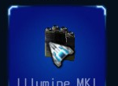
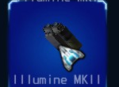
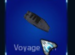
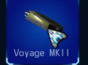
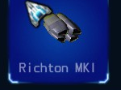
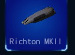
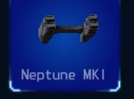
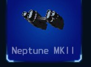
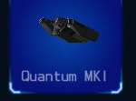
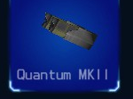

Illumine MK I Engine
While merely an entry level engine, the Illumine is ideal for
Scouts that are designed more for shipping, mining, cleaning, trade, and other non-combat objectives. The engine is known for its low cost of operation, being the most fuel efficient type of engine available to mercenaries.
Assembly: 15
Thrust: 150

Illumine MK II Engine
This upgraded version of the Illumine engine provides adequate performance for light combat duties, but is generally considered to be best for non-combat objectives.
Its small design, low fuel consumption, and modest output provides a good first upgrade for rookie mercenaries flying light spacecraft.
Assembly: 25
Thrust: 300

Voyage MK I Engine
Designed to provide a high level of power with minimal assembly use, the Voyage class engine is an ideal choice for small spacecraft that need assembly resources for other critical components. It also includes twin vertical stabilizers to improve atmospheric control and is considered a good general purpose engine.
Assembly: 45
Thrust: 450

Voyage MK II Engine
The MKII offers remarkable power output for its size and assembly resources. It's considered by most mercenaries to be the best choice for light and medium class spacecraft.
It also offers close to the power output of a Richton engine with a substantially lower assembly resource requirement.
Assembly: 70
Thrust: 600

Richton Ion Engine
The military research division in the Richton system developed this engine for use in interceptor class combat spacecraft and was soon made available to mercenaries looking for a propulsion system that balances fuel consumption with power output. The Richton is a good overall choice for a variety of combat and non-combat roles.
Assembly: 90
Thrust: 750

Richton MKII Ion Engine
The MKII Ion Engine improves the power capacity of the original Richton version with a very small increase in fuel consumption. Not generally recommended for smaller spacecraft, the Richton MKII engine is a good fit for medium sized spacecraft.
Assembly: 115
Thrust: 900

Neptune MK I Engine
The Neptune is a well armored and efficient propulsion system. For its power, the Neptune is relatively fuel efficient. It's generally a better choice for larger ships requiring powerful engines and with a high level of assembly resource needed to accommodate its size.
Assembly: 145
Thrust: 1050

Neptune MK II Engine
The MK II Neptune is substantially larger and more powerful than the MK I. It also includes a much larger cooling system with bigger heat vents for improved efficiency and reduced exposure to damage.
The Neptune is also well shielded and is a popular choice for mercenaries who frequently engage in heavy combat.
Assembly: 155
Thrust: 1200

Quantum Ion MK I Engine
The MK I Ion engine is the civilian version of a classified military propulsion system offering far more power than other engine types. It includes 2 compression cells which improves performance for rapid speed changes and 4 sub-outlets for stability.
Assembly: 170
Thrust: 1350

Quantum Ion MK II Engine
The MK II is essentialy two MK I engines joined together.
It includes 4 compression cells and 8 sub-outlets. While not the most fuel efficient engine by any measure, its output is unmatched and provides remarkable speed even for the heaviest spacecraft.
Assembly: 200
Thrust: 1500